In torsion testing the circular bar is placed in the machine such a way that its longitudinal axis coincides with the axis of the grips and so that it remains straight during the test. Then rotate one grip at a reasonable constant speed until the test piece breaks, here the shearing stresses will develop in any cross section of the bar whose value increases linearly from zero at the centre to a maximum at the outer periphery. Troptometer is used to measure the twist to an accuracy of one minute.
Torsion testing machine
Types of torsion testing vary from product to product but can usually be classified as:
- Axial-Torsion: Applying both axial (tension or compression) and torsional forces to the test specimen.
- Torsion Only: Applying only torsional loads to the test specimen
- Failure Testing: Twisting the product, component, or specimen until failure. Failure can be classified as either a physical break or a kink/defect in the specimen.
- Proof Testing: Applying a torsional load and holding this torque load for a fixed amount of time.
Consider now the solid circular shaft of radius ‘R’ subjected to a torque ‘T’ at one end, the other end being fixed under the action of this torque. The length of the shaft is L. Imagine a horizontal radial line drawn on the end face. When the end is twisted the line rotates through an angle θ. The length of the arc produced is Rθ
Now consider a line drawn along the length of the shaft. When twisted the lines moves through an angle ϒ. The length of the arc produced is Lϒ.
If we assume that the two arcs are the same it follows that Rϴ= Lϒ
Hence by equating Lϒ= Rϴ, we get 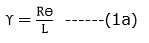
The relation between shear strain and shear stress is 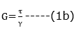
𝜏 is the shear stress and G the modulus of rigidity.G is one of the elastic constants of a material. The equation is only true so long as the material remains elastic.
Substituting (1a) into (1b) we get 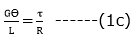
Since the derivation could be applied to any radius, it follows that shear stress is directly proportional to radius ‘r’ and is a maximum on the surface.
Equation (1c) could be written as 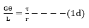
Now lets consider how the applied torque ‘T’ is balanced by the internal stress of the material.Consider a elementary ring of material with shear stress 𝜏 acting on it at radius r.
Force acts at a radius r then the torque produced is
Since 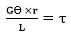from equation (1d) then
Now substituting 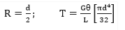
Then,
The assumptions made while deriving the above relation are:
- Material is homogenous.
- Circular section remains circular and do not warp.
- A plane section of a material perpendicular to its longitudinal axis remains plane and does not warp after the torque is applied.
- Shaft is loaded by a couple or torque in a plane perpendicular to the longitudinal axis of the plane.
- Shear stress is proportional to shear strain; it means that Hook’s Law is applicable.
- In circular shafts subjected to torque shearing strain varies linearly.
Failure patterns in torsion:

(Source: http://up.persianscript.ir/uploads/13452737931.pdf)
- Solid ductile metal bars (mild steel): Ductile torsion failure reveals a flat, transverse break having smooth shear surface and microvoid formation. The failure occurs along a plane perpendicular to the axis, in this plane the principal stress will be maximum.
- Solid brittle metal bars: The crack propagates on a helical plane. The fracture surface roughness increases with distance of propagation, crack propagation rate, and decreased strength level. 45-degree helicoidal fracture will take place.
- Ductile metal tube-failure by buckling.
- Brittle metal tube
Evaluation of fractures occurring during simple torsion test:
(Source : Annex c, IS 1717:2012- Method of simple torsion testing of wire, Third Revision,2012)
- IS 1717 (2012): Metallic Materials - Wire - Simple Torsion Test, Third Revision, 2012

OBJECTIVE: To study the mechanical properties of mild steel under torsion. STEPS:
- Click on the Torsion test on Vertical Mild Steel file, a window will open as shown.
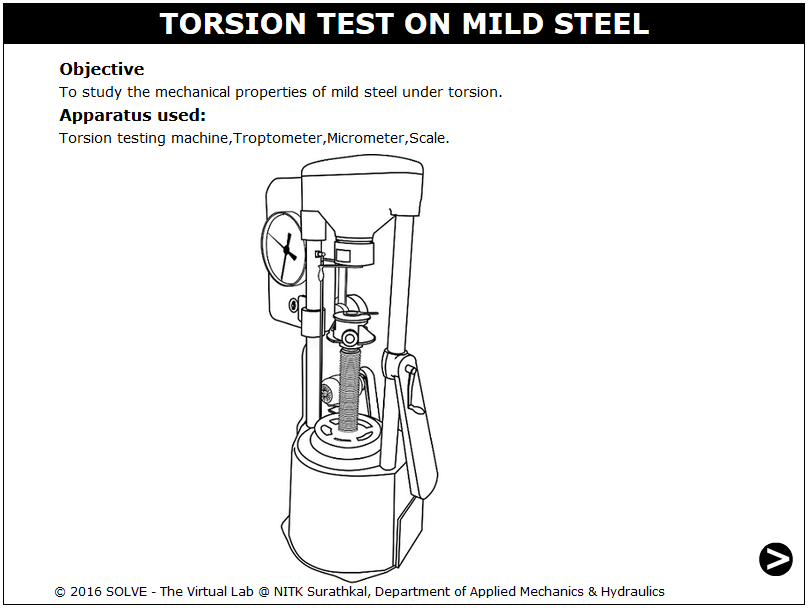
- Click on the NEXT button to move to the next step.
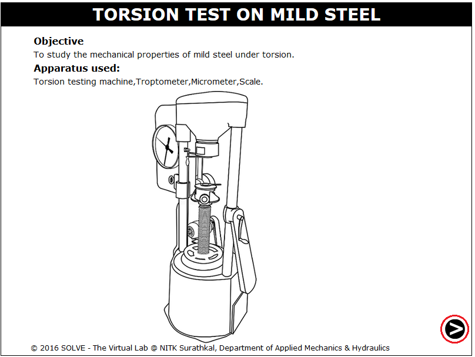
- Click on vernier calliper to measure the diameter of the specimen.
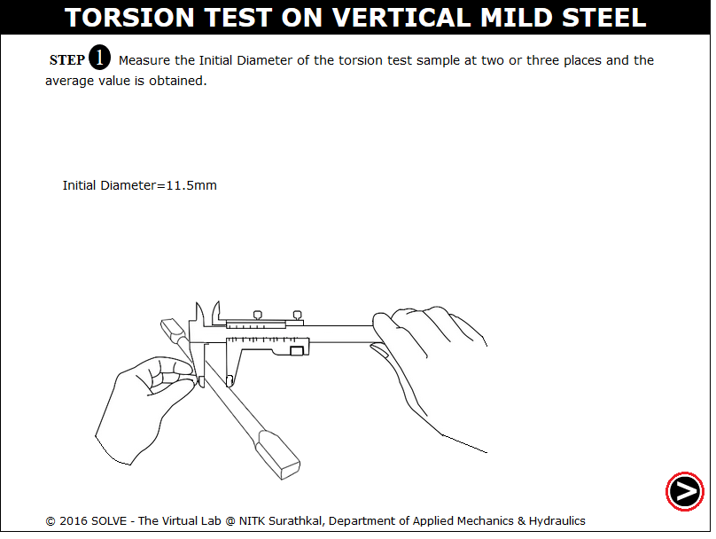
- Click on measuring scale to measure the Length of the specimen between the grips.
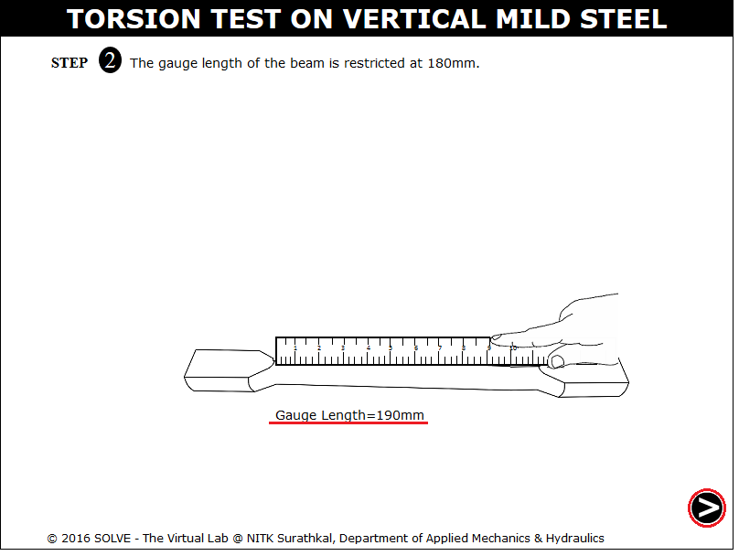
- Click on hand with chalk to mark a straight line between the gauge length on the specimen.
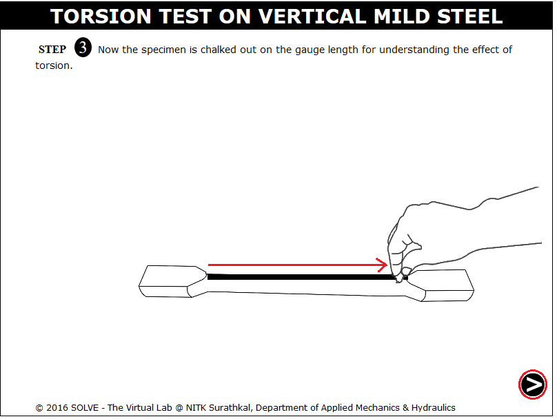
- Specimen is dragged exactly to position where the arrow is pointing.
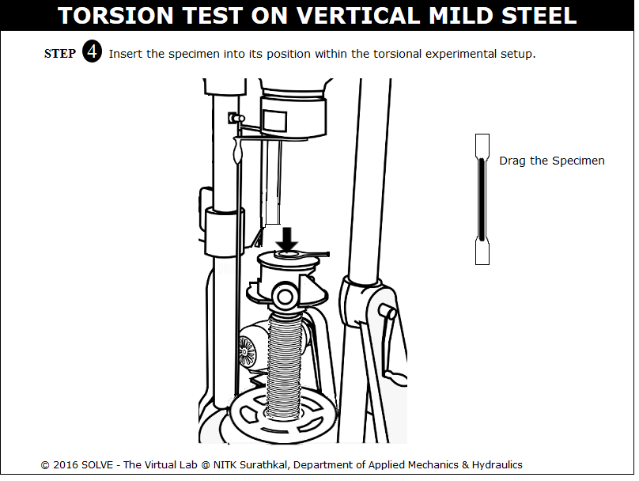
- Click on Green button to ON the motor, the experiment starts and the specimen starts rotating.
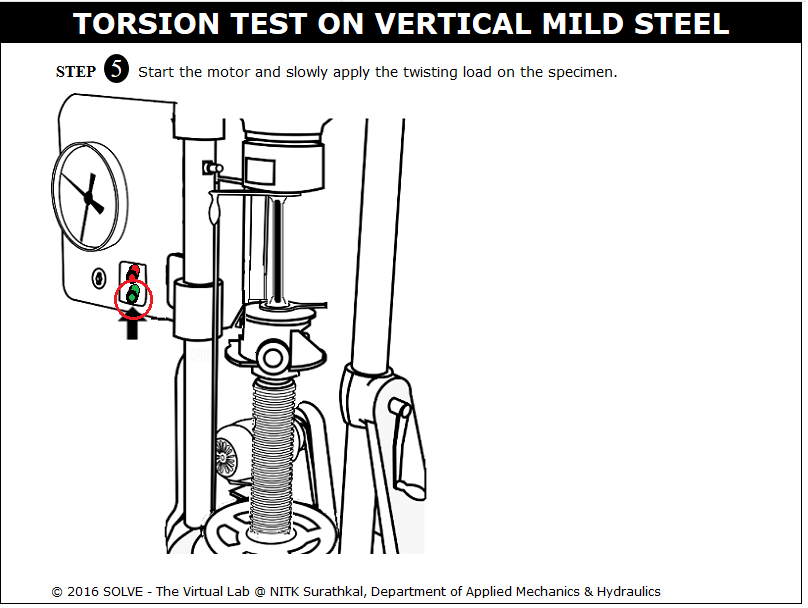
- Click on the RED button to stop the motor.

- Graph is obtained, clck on the highlighted area to view the slope drawn to the plot.
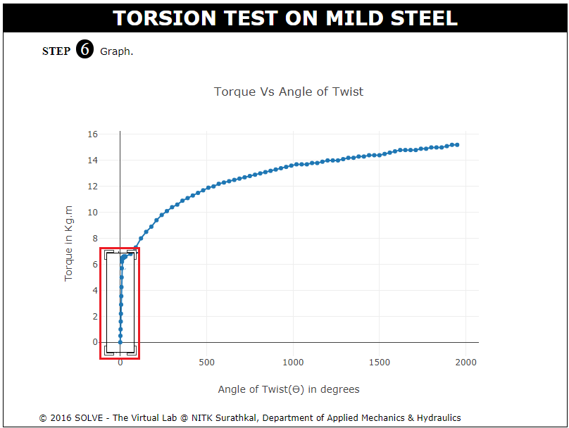
- Slope of the graph is obtained , then click NEXT button to move for calculation.
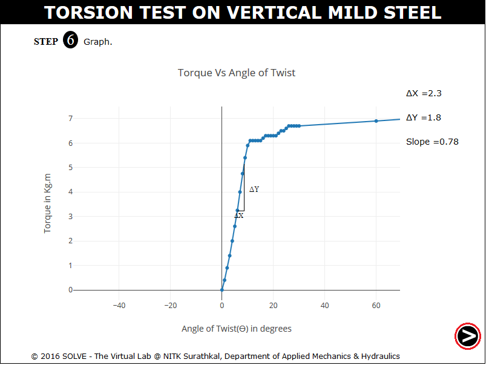
- Enter the calculated value and then click on Check to get the actual test result.
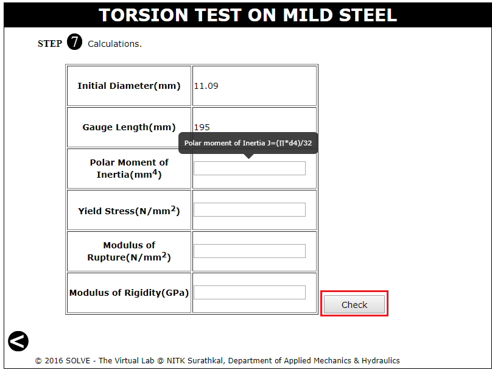


- What do you mean by modulus of rigidity?
- Define modulus of rupture?
- How the angle of twist is measured in this test?
- Why does the brittle material fails in helicoidal shape and ductile material shears on right section under torsion load?
- What are the different failure modes of the specimens?

Check your ability to answer some of the questions relevant to the simulation that you used.
Get Started

- IS 1717 (2012): Metallic Materials - Wire - Simple Torsion Test, Third Revision, 2012..
- F.L. Singer. Strength of Materials, Harper and Row Publishers.
- E.J. Hearn, Mechanics of Material, Pergaman Press, England,1972.
- G.E. Dieter, Mechanical Metallurgy, SI Metric Edition, McGraw – Hill
- F.P. Beer and E.R. Johnston, Mechanics of Material, 3rd Edition, Tata McGraw Hill, New-Delhi, 2007.